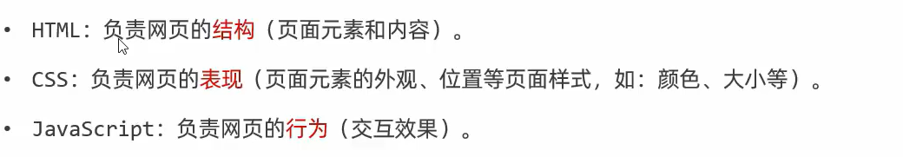
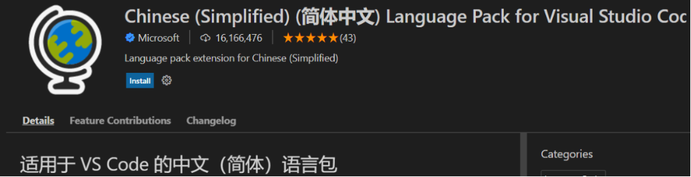
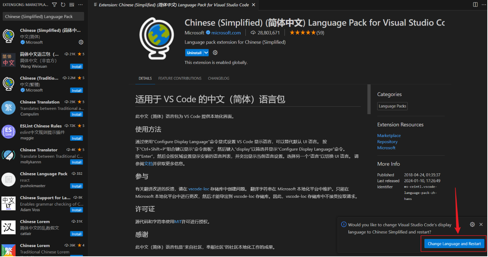
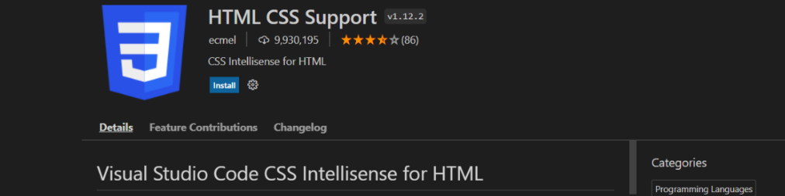
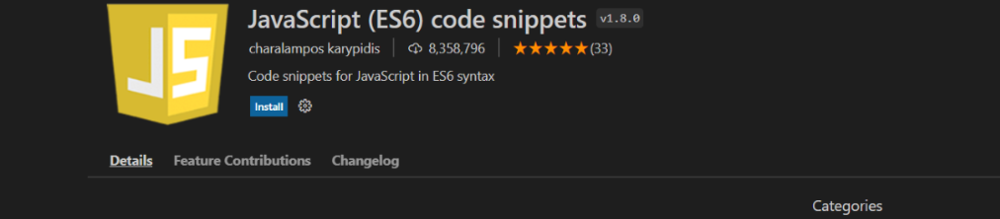
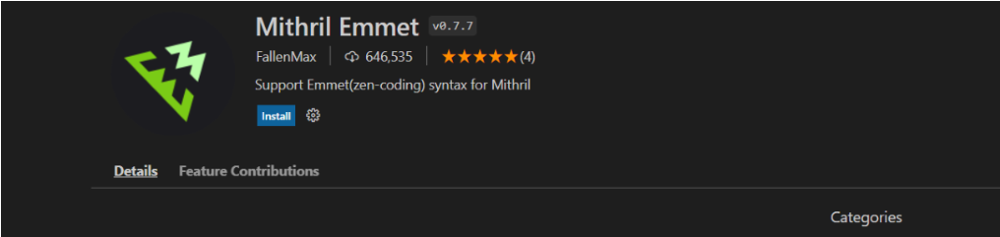
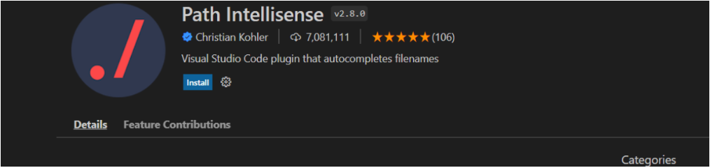
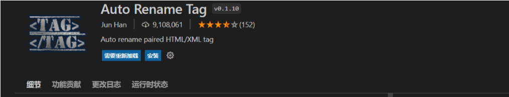
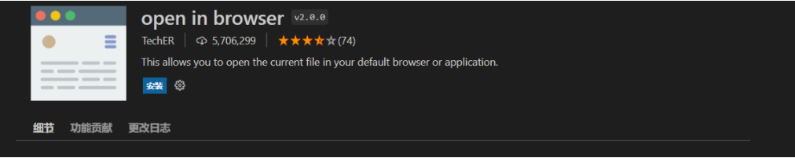

前端开发环境：VS Code 与 Web 标准
浏览器内核可以直接解析前端代码中的渲染部分 ;
Web标准
也叫网页标准 , 由一系列的标准组成, 大部分由W3C( )负责指定;
三个组成部分 :

开发工具 :
VsCode : 基础配置文件 :
然后在打开的 settings.json 中增加如下配置信息：
{
"workbench.colorTheme": "Default Light+",
"workbench.statusBar.visible": false,
"editor.fontFamily": "'Courier New', Consolas, monospace",
"editor.fontSize": 15,
"editor.lineHeight": 1.8,
"editor.tabSize": 2,
"editor.codeActionsOnSave": {
"source.fixAll": "explicit"
},
"editor.minimap.enabled": true,
"liveServer.settings.donotShowInfoMsg": true,
"git.confirmSync": false,
"terminal.integrated.defaultProfile.windows": "Command Prompt"
}
需要安装的插件 :
完成前端开发，常见插件介绍：
Chinese (Simplified) Language Pack
适用于 VS Code 的中文（简体）语言包

安装完毕之后，点击右下角的 "Change Language and Restart" 按钮，重新启动服务。

HTML CSS Support
在编写样式表的时候，自动补全功能大大缩减了编写时间。

JavaScript (ES6) code snippets
支持ES6语法提示

Mithril Emmet
一个能大幅度提高前端开发效率的一个工具，用于补全代码

Path Intellisense
路径提示插件

Vue 3 Snippets
在 Vue 2 或者 Vue 3 开发中提供代码片段，语法高亮和格式化的 VS Code 插件，能极大提高你的开发效率。
Auto Close Tag
自动闭合HTML/XML标签
Auto Rename Tag
自动完成另一侧标签的同步修改

open in browser
vscode不像IDE一样能够直接在浏览器中打开html，而该插件支持快捷键与鼠标右键快速在浏览器中打开html文件，支持自定义打开指定的浏览器，包括：Firefox，Chrome，Opera，IE以及Safari

Live Server
一个具有实时加载功能的小型服务器，也就是说我们可以在项目中实时用live-server作为一个实时服务器实时查看开发的网页或项目效果。
Vue - Official
一个专门为 Vue 3 构建的语言支持插件。
File Utils
File Utils插件,可以方便快捷的来创建、复制、移动、重命名文件和目录。
IntelliJ IDEA Keybindings
安装VSCode的插件 IntelliJ IDEA Keybindings 即可在VSCode中使用IDEA的快捷键。
MarsCode AI
MarsCode 是字节跳动豆包旗下的智能编程助手，提供以智能代码补全为代表的核心能力，支持主流编程语言及 IDE，能在编码过程中提供单行或整个函数的建议，同时支持在用户编码过程中提供代码解释、单测生成、问题修复、技术问答等辅助功能，提升编码效率与质量。
**AI助手账号注册：**https://www\.marscode\.cn/home?utm\_source\=mkt&utm\_medium\=cpaitcast&utm\_campaign\=hmcxy
TONGYI Lingma
通义灵码，是一款基于通义大模型的智能编码辅助工具，提供行级/函数级实时续写、自然语言生成代码、单元测试生成、代码注释生成、代码解释、研发智能问答、异常报错排查等能力，并针对阿里云 SDK/API 的使用场景调优，为开发者带来高效、流畅的编码体验。